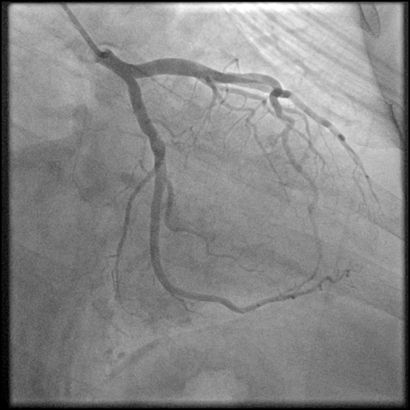
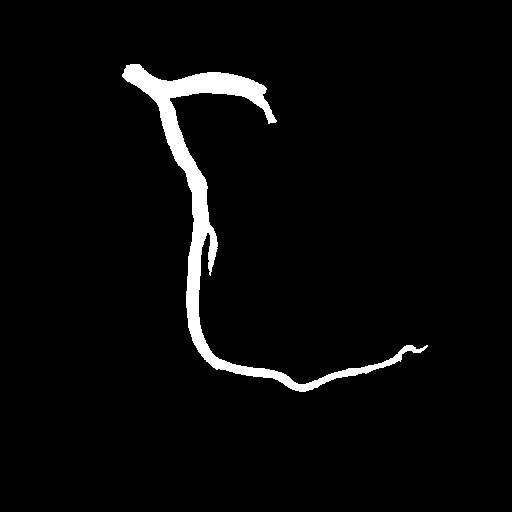

Run fcd7c282-b48e-4e47-98c0-1c94eee59fb7 · model corovision-preserved-2d-20261023. No training. Research estimates, not diagnosis. No reference mask was supplied, so image-specific accuracy is unavailable.
85:
86: def predict_masks(path):
87: import numpy as np
88: import torch
89: from PIL import Image
90: from .preserved_models import predict_one
91: if not ready():
92: raise ValueError('Trained release unavailable or hash verification failed')
93: with Image.open(path) as opened:
94: rgb = opened.convert('RGB')
95: if rgb.size != (512, 512):
96: raise ValueError('The trained release requires the application512x512 prepared preview')
97: gray = np.asarray(rgb.convert('L'), dtype=np.float32) / 255.
98: color = np.asarray(rgb, dtype=np.float32).copy() / 255.
99: with LOCK:
100: artery_model, stenosis_model = _models(str(artifact_root()))
101: with torch.inference_mode():
102: artery_probability = artery_model(torch.from_numpy(gray.copy())[None, None]).sigmoid()[0, 0].numpy()
103: instances = predict_one(stenosis_model, torch.from_numpy(color.transpose(2, 0, 1).copy()), 'cpu', .1)
104: artery = artery_probability >= .5
105: stenosis = np.zeros_like(artery)
106: probability = np.zeros_like(artery_probability)
107: records = []
177: def analyze_vessel_geometry(mask: np.ndarray, spacing_mm: tuple[float, float] | None = None,
178: probability_map: np.ndarray | None = None,
179: threshold: float = 0.5) -> dict:
180: """Describe 2D mask topology, approximate centerlines, and local mask widths."""
181: binary = postprocess_mask(mask)
182: probabilities = None if probability_map is None else np.asarray(probability_map, dtype=np.float32)
183: if probabilities is not None and (probabilities.shape != binary.shape or not np.isfinite(probabilities).all()):
184: raise ValueError("probability_map must be finite and match the binary mask shape")
185: if probabilities is not None and (np.any(probabilities < 0) or np.any(probabilities > 1)):
186: raise ValueError("probability_map values must be within [0, 1]")
187: if not 0 <= threshold <= 1:
188: raise ValueError("threshold must be between 0 and 1")
189: skeleton = _skeletonize(binary)
190: height, width = binary.shape
191: # Metadata must not turn non-finite or malformed spacing into physical units.
192: try:
193: spacing_values = np.asarray(spacing_mm, dtype=float)
194: calibrated = bool(spacing_values.shape == (2,) and np.isfinite(spacing_values).all()
195: and (spacing_values > 0).all())
196: except (TypeError, ValueError):
197: calibrated = False
198: unit = "mm" if calibrated else "px"
199: sy, sx = spacing_values if calibrated else (1.0, 1.0)
200:
201: def neighbors(point, points):
202: y, x = point
203: found = []

{
"centerline_length": 797.96,
"mean_diameter": 12.08,
"diameter_unit": "px",
"branching_points": 2,
"endpoints": 4,
"calibration": "unavailable"
}Widths are approximate; physical calibration and validated local/reference diameter protocol are required for narrowing. Severity remains unavailable. This is not an advanced-model comparison.